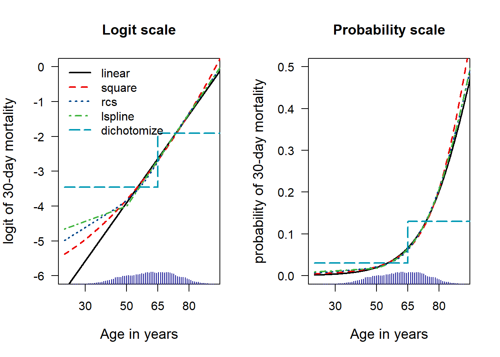

6 Choosing Between Alternative Models
6.1 Non-linearity illustrations
6.1.1 Prepare GUSTO data
Some logistic regression fits with linear, square, rcs, linear spline terms
# Import gusto; publicly available
gusto <- read.csv("data/gusto_age.csv")[-1]
Fmort <- as.data.frame(read.csv("data/Fmort.csv"))[-1]
Fmort$age10 <- Fmort$age / 10
Fmort$age102 <- Fmort$age10^26.1.2 anova results for the different fits
We note minor differences between the continuous fits, and a clear loss of information for the dichtomization at age 65 years
anova(agegusto.linear)## Wald Statistics Response: DAY30
##
## Factor Chi-Square d.f. P
## AGE 1729 1 <.0001
## TOTAL 1729 1 <.0001anova(agegusto.square)## Wald Statistics Response: DAY30
##
## Factor Chi-Square d.f. P
## AGE 1858.3 2 <.0001
## Nonlinear 13.2 1 3e-04
## TOTAL 1858.3 2 <.0001anova(agegusto.rcs)## Wald Statistics Response: DAY30
##
## Factor Chi-Square d.f. P
## AGE 1878.5 4 <.0001
## Nonlinear 24.7 3 <.0001
## TOTAL 1878.5 4 <.0001anova(agegusto.linearspline)## Wald Statistics Response: DAY30
##
## Factor Chi-Square d.f. P
## AGE 1847 2 <.0001
## TOTAL 1847 2 <.0001anova(agegusto.cat65)## Wald Statistics Response: DAY30
##
## Factor Chi-Square d.f. P
## AGE 1263 1 <.0001
## TOTAL 1263 1 <.00016.1.3 Plotting of age effects
Plot age effect first at lp scale (logodds), then at probability scale
Age effect at logodds scale; Age effect at probability scale 
Fig 6.1
6.1.5 anova results for the fit of age, with interaction by type of surgery
Type of surgery is clearly most relevant (chi2 >13500) in all fits. Age is als relevant (chi2>3000), and a square term is not needed (chi2 = 2); the interaction adds a little bit (chi2 95). With these large numbers (1.1M patients), most effects have p<.0001.
We will evaluate the differences between fits with or without interaction term graphically further down
# Look for model improvements
anova(fitplot2) # linear age effect, no interaction with surgery## Wald Statistics Response: mort
##
## Factor Chi-Square d.f. P
## surgery 13500 13 <.0001
## age 3167 1 <.0001
## TOTAL 16446 14 <.0001anova(fitage2) # age square added## Wald Statistics Response: mort
##
## Factor Chi-Square d.f. P
## surgery 13499.66 13 <.0001
## age10 18.13 1 <.0001
## age102 2.33 1 0.127
## TOTAL 16424.97 15 <.0001anova(fitplot) # interaction added to linear age effect## Wald Statistics Response: mort
##
## Factor Chi-Square d.f. P
## surgery (Factor+Higher Order Factors) 13566.0 26 <.0001
## All Interactions 94.5 13 <.0001
## age (Factor+Higher Order Factors) 3280.7 14 <.0001
## All Interactions 94.5 13 <.0001
## surgery * age (Factor+Higher Order Factors) 94.5 13 <.0001
## TOTAL 16620.3 27 <.0001